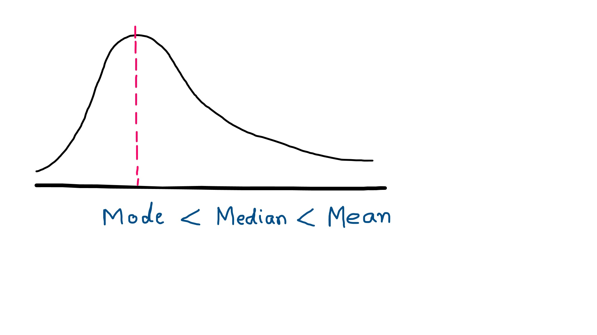
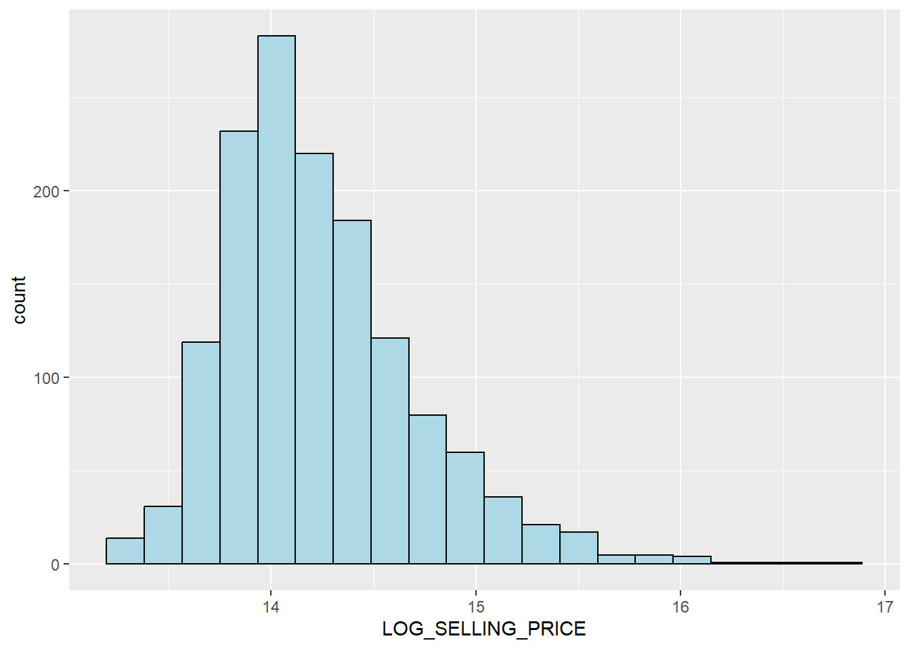
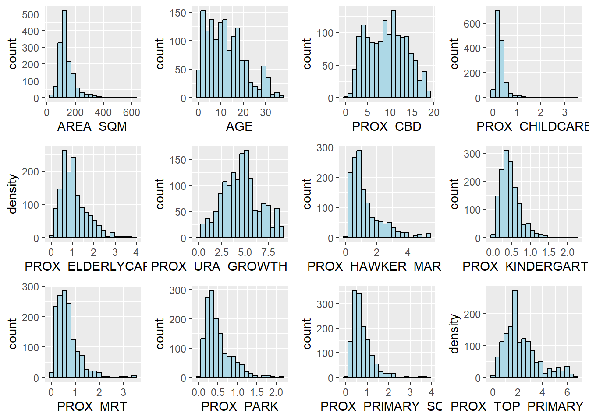
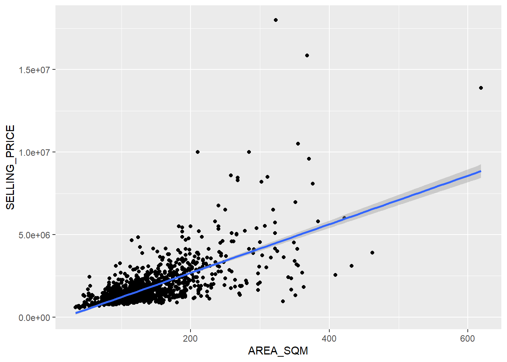
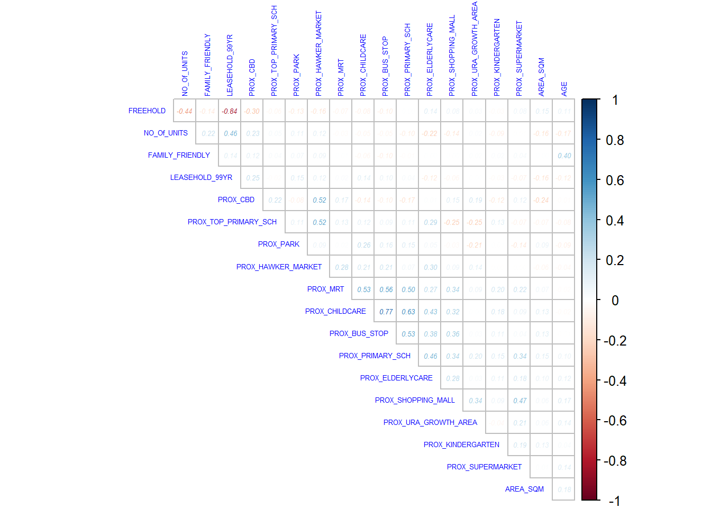

pacman::p_load(olsrr, corrplot, ggpubr, sf, spdep, GWmodel, tmap, tidyverse, gtsummary)HandsOn_Ex04 : Calibrating Hedonic Pricing Model for Private Highrise Property with GWR Method.
1. Overview.
Geographically weighted regression (GWR) is a spatial statistical technique that takes non-stationary variables into consideration (e.g., climate; demographic factors; physical environment characteristics) and models the local relationships between these independent variables and an outcome of interest (also known as dependent variable). In this hands-on exercise, we will learn how to build hedonic pricing models by using GWR methods. The dependent variable is the resale prices of condominium in 2015. The independent variables are divided into either structural and locational.
1.1 What is Hedonic Pricing?
As defined by Cambridge dictionary, the word Hedonic means “connected with feelings of pleasure“
Hedonic pricing is a model that identifies price factors according to the premise that price is determined both by internal characteristics of the good being sold and external factors affecting it.
A hedonic pricing model is often used to estimate quantitative values for environmental or ecosystem services that directly affect market prices for homes. This method of valuation can require a strong degree of statistical expertise and model specification, following a period of data collection.
1.2 Important points to remember.
Hedonic pricing identifies the internal and external factors and characteristics that affect an item’s price in the market.
Hedonic pricing is most often seen in the housing market, since real estate prices are determined by the characteristics of the property itself as well as the neighborhood or environment within which it exists.
Hedonic pricing captures a consumer’s willingness to pay for what they perceive are environmental differences that add or detract from the intrinsic value of an asset or property.
In simple words, ‘Hedonic pricing’ uses regression to see which factors matter the most and each’s relative importance.
2. The Data.
Two data sets will be used in this model building exercise, they are:
URA Master Plan subzone boundary in shapefile format (i.e. MP14_SUBZONE_WEB_PL)
condo_resale_2015 in csv format (i.e. condo_resale_2015.csv)
3. Getting Started.
Before we get started, it is important for us to install the necessary R packages into R and launch these R packages into R environment.
The R packages needed for this exercise are as follows :
R package for building OLS and performing diagnostics tests
R package for calibrating geographical weighted family of models
R package for multivariate data visualisation and analysis
Spatial data handling
- sf
Attribute data handling
- tidyverse, especially readr, ggplot2 and dplyr
Choropleth mapping
- tmap
The code chunks below installs and launches these R packages into R environment.
I received error while installing gtsummary. Hence trying to install this package again.
install.packages("gtsummary")Warning: package 'gtsummary' is in use and will not be installed4. A short note about GWmodel
GWmodel package provides a collection of localised spatial statistical methods, namely :
GW summary statistics,
GW principal components analysis,
GW discriminant analysis and
Various forms of GW regression; some of which are provided in basic and robust (outlier resistant) forms. Commonly, outputs or parameters of the GWmodel are mapped to provide a useful exploratory tool, which can often precede (and direct) a more traditional or sophisticated statistical analysis.
5. Geospatial Data Wrangling.
5.1 Importing geospatial data
The geospatial data used in this hands-on exercise is called MP14_SUBZONE_WEB_PL. It is in ESRI shapefile format. The shapefile consists of URA Master Plan 2014’s planning sub-zone boundaries. Polygon features are used to represent these geographic boundaries. The GIS data is in svy21 projected coordinates systems.
The code chunk below is used to import MP_SUBZONE_WEB_PL shapefile by using st_read() of sf packages.
mpsz = st_read(dsn = "data/geospatial", layer = "MP14_SUBZONE_WEB_PL")Reading layer `MP14_SUBZONE_WEB_PL' from data source
`C:\Yogendra345\ISSS624_A01\HandsOn_Exercise4\data\geospatial'
using driver `ESRI Shapefile'
Simple feature collection with 323 features and 15 fields
Geometry type: MULTIPOLYGON
Dimension: XY
Bounding box: xmin: 2667.538 ymin: 15748.72 xmax: 56396.44 ymax: 50256.33
Projected CRS: SVY21The report above shows that the R object used to contain the imported MP14_SUBZONE_WEB_PL shapefile is called mpsz and it is a simple feature object. The geometry type is multipolygon. it is also important to note that mpsz simple feature object does not have EPSG information.
5.2 Updating CRS information.
The code chunk below updates the newly imported mpsz with the correct ESPG code (i.e. 3414)
Note - Singapore has a special coordinate system called SVY21. This converts the special coordinates to lat/lng.
mpsz_svy21 <- st_transform(mpsz, 3414)After transforming the projection metadata, you can varify the projection of the newly transformed mpsz_svy21 by using st_crs() of sf package.
The code chunk below will be used to verify the newly transformed mpsz_svy21
st_crs(mpsz_svy21)Coordinate Reference System:
User input: EPSG:3414
wkt:
PROJCRS["SVY21 / Singapore TM",
BASEGEOGCRS["SVY21",
DATUM["SVY21",
ELLIPSOID["WGS 84",6378137,298.257223563,
LENGTHUNIT["metre",1]]],
PRIMEM["Greenwich",0,
ANGLEUNIT["degree",0.0174532925199433]],
ID["EPSG",4757]],
CONVERSION["Singapore Transverse Mercator",
METHOD["Transverse Mercator",
ID["EPSG",9807]],
PARAMETER["Latitude of natural origin",1.36666666666667,
ANGLEUNIT["degree",0.0174532925199433],
ID["EPSG",8801]],
PARAMETER["Longitude of natural origin",103.833333333333,
ANGLEUNIT["degree",0.0174532925199433],
ID["EPSG",8802]],
PARAMETER["Scale factor at natural origin",1,
SCALEUNIT["unity",1],
ID["EPSG",8805]],
PARAMETER["False easting",28001.642,
LENGTHUNIT["metre",1],
ID["EPSG",8806]],
PARAMETER["False northing",38744.572,
LENGTHUNIT["metre",1],
ID["EPSG",8807]]],
CS[Cartesian,2],
AXIS["northing (N)",north,
ORDER[1],
LENGTHUNIT["metre",1]],
AXIS["easting (E)",east,
ORDER[2],
LENGTHUNIT["metre",1]],
USAGE[
SCOPE["Cadastre, engineering survey, topographic mapping."],
AREA["Singapore - onshore and offshore."],
BBOX[1.13,103.59,1.47,104.07]],
ID["EPSG",3414]]Notice that the EPSG: is indicated as 3414 now.
Next, we will reveal the extent of mpsz_svy21 by using st_bbox() of sf package.
st_bbox(mpsz_svy21) #view extent xmin ymin xmax ymax
2667.538 15748.721 56396.440 50256.334 6. Aspatial Data Wrangling.
6.1 Importing the aspatial data.
The condo_resale_2015 is in csv file format. The codes chunk below uses read_csv() function of readr package to import condo_resale_2015 into R as a tibble data frame called condo_resale.
condo_resale = read_csv("data/aspatial/Condo_resale_2015.csv")New names:
Rows: 1436 Columns: 49
── Column specification
──────────────────────────────────────────────────────── Delimiter: "," dbl
(23): LATITUDE, LONGITUDE, POSTCODE, SELLING_PRICE, AREA_SQM, AGE, PROX_... lgl
(26): ...24, ...25, ...26, ...27, ...28, ...29, ...30, ...31, ...32, ......
ℹ Use `spec()` to retrieve the full column specification for this data. ℹ
Specify the column types or set `show_col_types = FALSE` to quiet this message.
• `` -> `...24`
• `` -> `...25`
• `` -> `...26`
• `` -> `...27`
• `` -> `...28`
• `` -> `...29`
• `` -> `...30`
• `` -> `...31`
• `` -> `...32`
• `` -> `...33`
• `` -> `...34`
• `` -> `...35`
• `` -> `...36`
• `` -> `...37`
• `` -> `...38`
• `` -> `...39`
• `` -> `...40`
• `` -> `...41`
• `` -> `...42`
• `` -> `...43`
• `` -> `...44`
• `` -> `...45`
• `` -> `...46`
• `` -> `...47`
• `` -> `...48`
• `` -> `...49`After importing the data file into R, it is important for us to examine if the data file has been imported correctly.
The codes chunks below uses glimpse() to display the data structure of will do the job.
glimpse(condo_resale)Rows: 1,436
Columns: 49
$ LATITUDE <dbl> 1.287145, 1.328698, 1.313727, 1.308563, 1.321437,…
$ LONGITUDE <dbl> 103.7802, 103.8123, 103.7971, 103.8247, 103.9505,…
$ POSTCODE <dbl> 118635, 288420, 267833, 258380, 467169, 466472, 3…
$ SELLING_PRICE <dbl> 3000000, 3880000, 3325000, 4250000, 1400000, 1320…
$ AREA_SQM <dbl> 309, 290, 248, 127, 145, 139, 218, 141, 165, 168,…
$ AGE <dbl> 30, 32, 33, 7, 28, 22, 24, 24, 27, 31, 17, 22, 6,…
$ PROX_CBD <dbl> 7.941259, 6.609797, 6.898000, 4.038861, 11.783402…
$ PROX_CHILDCARE <dbl> 0.16597932, 0.28027246, 0.42922669, 0.39473543, 0…
$ PROX_ELDERLYCARE <dbl> 2.5198118, 1.9333338, 0.5021395, 1.9910316, 1.121…
$ PROX_URA_GROWTH_AREA <dbl> 6.618741, 7.505109, 6.463887, 4.906512, 6.410632,…
$ PROX_HAWKER_MARKET <dbl> 1.76542207, 0.54507614, 0.37789301, 1.68259969, 0…
$ PROX_KINDERGARTEN <dbl> 0.05835552, 0.61592412, 0.14120309, 0.38200076, 0…
$ PROX_MRT <dbl> 0.5607188, 0.6584461, 0.3053433, 0.6910183, 0.528…
$ PROX_PARK <dbl> 1.1710446, 0.1992269, 0.2779886, 0.9832843, 0.116…
$ PROX_PRIMARY_SCH <dbl> 1.6340256, 0.9747834, 1.4715016, 1.4546324, 0.709…
$ PROX_TOP_PRIMARY_SCH <dbl> 3.3273195, 0.9747834, 1.4715016, 2.3006394, 0.709…
$ PROX_SHOPPING_MALL <dbl> 2.2102717, 2.9374279, 1.2256850, 0.3525671, 1.307…
$ PROX_SUPERMARKET <dbl> 0.9103958, 0.5900617, 0.4135583, 0.4162219, 0.581…
$ PROX_BUS_STOP <dbl> 0.10336166, 0.28673408, 0.28504777, 0.29872340, 0…
$ NO_Of_UNITS <dbl> 18, 20, 27, 30, 30, 31, 32, 32, 32, 32, 34, 34, 3…
$ FAMILY_FRIENDLY <dbl> 0, 0, 0, 0, 0, 1, 1, 0, 1, 1, 0, 0, 0, 0, 0, 0, 0…
$ FREEHOLD <dbl> 1, 1, 1, 1, 1, 1, 1, 1, 1, 0, 1, 1, 1, 1, 1, 1, 1…
$ LEASEHOLD_99YR <dbl> 0, 0, 0, 0, 0, 0, 0, 0, 0, 0, 0, 0, 0, 0, 0, 0, 0…
$ ...24 <lgl> NA, NA, NA, NA, NA, NA, NA, NA, NA, NA, NA, NA, N…
$ ...25 <lgl> NA, NA, NA, NA, NA, NA, NA, NA, NA, NA, NA, NA, N…
$ ...26 <lgl> NA, NA, NA, NA, NA, NA, NA, NA, NA, NA, NA, NA, N…
$ ...27 <lgl> NA, NA, NA, NA, NA, NA, NA, NA, NA, NA, NA, NA, N…
$ ...28 <lgl> NA, NA, NA, NA, NA, NA, NA, NA, NA, NA, NA, NA, N…
$ ...29 <lgl> NA, NA, NA, NA, NA, NA, NA, NA, NA, NA, NA, NA, N…
$ ...30 <lgl> NA, NA, NA, NA, NA, NA, NA, NA, NA, NA, NA, NA, N…
$ ...31 <lgl> NA, NA, NA, NA, NA, NA, NA, NA, NA, NA, NA, NA, N…
$ ...32 <lgl> NA, NA, NA, NA, NA, NA, NA, NA, NA, NA, NA, NA, N…
$ ...33 <lgl> NA, NA, NA, NA, NA, NA, NA, NA, NA, NA, NA, NA, N…
$ ...34 <lgl> NA, NA, NA, NA, NA, NA, NA, NA, NA, NA, NA, NA, N…
$ ...35 <lgl> NA, NA, NA, NA, NA, NA, NA, NA, NA, NA, NA, NA, N…
$ ...36 <lgl> NA, NA, NA, NA, NA, NA, NA, NA, NA, NA, NA, NA, N…
$ ...37 <lgl> NA, NA, NA, NA, NA, NA, NA, NA, NA, NA, NA, NA, N…
$ ...38 <lgl> NA, NA, NA, NA, NA, NA, NA, NA, NA, NA, NA, NA, N…
$ ...39 <lgl> NA, NA, NA, NA, NA, NA, NA, NA, NA, NA, NA, NA, N…
$ ...40 <lgl> NA, NA, NA, NA, NA, NA, NA, NA, NA, NA, NA, NA, N…
$ ...41 <lgl> NA, NA, NA, NA, NA, NA, NA, NA, NA, NA, NA, NA, N…
$ ...42 <lgl> NA, NA, NA, NA, NA, NA, NA, NA, NA, NA, NA, NA, N…
$ ...43 <lgl> NA, NA, NA, NA, NA, NA, NA, NA, NA, NA, NA, NA, N…
$ ...44 <lgl> NA, NA, NA, NA, NA, NA, NA, NA, NA, NA, NA, NA, N…
$ ...45 <lgl> NA, NA, NA, NA, NA, NA, NA, NA, NA, NA, NA, NA, N…
$ ...46 <lgl> NA, NA, NA, NA, NA, NA, NA, NA, NA, NA, NA, NA, N…
$ ...47 <lgl> NA, NA, NA, NA, NA, NA, NA, NA, NA, NA, NA, NA, N…
$ ...48 <lgl> NA, NA, NA, NA, NA, NA, NA, NA, NA, NA, NA, NA, N…
$ ...49 <lgl> NA, NA, NA, NA, NA, NA, NA, NA, NA, NA, NA, NA, N…head(condo_resale$LONGITUDE) #see the data in XCOORD column[1] 103.7802 103.8123 103.7971 103.8247 103.9505 103.9386head(condo_resale$LATITUDE) #see the data in YCOORD column[1] 1.287145 1.328698 1.313727 1.308563 1.321437 1.314198Next, summary() of base R is used to display the summary statistics of cond_resale tibble data frame.
summary(condo_resale) LATITUDE LONGITUDE POSTCODE SELLING_PRICE
Min. :1.240 Min. :103.7 Min. : 18965 Min. : 540000
1st Qu.:1.309 1st Qu.:103.8 1st Qu.:259849 1st Qu.: 1100000
Median :1.328 Median :103.8 Median :469298 Median : 1383222
Mean :1.334 Mean :103.8 Mean :440439 Mean : 1751211
3rd Qu.:1.357 3rd Qu.:103.9 3rd Qu.:589486 3rd Qu.: 1950000
Max. :1.454 Max. :104.0 Max. :828833 Max. :18000000
AREA_SQM AGE PROX_CBD PROX_CHILDCARE
Min. : 34.0 Min. : 0.00 Min. : 0.3869 Min. :0.004927
1st Qu.:103.0 1st Qu.: 5.00 1st Qu.: 5.5574 1st Qu.:0.174481
Median :121.0 Median :11.00 Median : 9.3567 Median :0.258135
Mean :136.5 Mean :12.14 Mean : 9.3254 Mean :0.326313
3rd Qu.:156.0 3rd Qu.:18.00 3rd Qu.:12.6661 3rd Qu.:0.368293
Max. :619.0 Max. :37.00 Max. :19.1804 Max. :3.465726
PROX_ELDERLYCARE PROX_URA_GROWTH_AREA PROX_HAWKER_MARKET PROX_KINDERGARTEN
Min. :0.05451 Min. :0.2145 Min. :0.05182 Min. :0.004927
1st Qu.:0.61254 1st Qu.:3.1643 1st Qu.:0.55245 1st Qu.:0.276345
Median :0.94179 Median :4.6186 Median :0.90842 Median :0.413385
Mean :1.05351 Mean :4.5981 Mean :1.27987 Mean :0.458903
3rd Qu.:1.35122 3rd Qu.:5.7550 3rd Qu.:1.68578 3rd Qu.:0.578474
Max. :3.94916 Max. :9.1554 Max. :5.37435 Max. :2.229045
PROX_MRT PROX_PARK PROX_PRIMARY_SCH PROX_TOP_PRIMARY_SCH
Min. :0.05278 Min. :0.02906 Min. :0.07711 Min. :0.07711
1st Qu.:0.34646 1st Qu.:0.26211 1st Qu.:0.44024 1st Qu.:1.34451
Median :0.57430 Median :0.39926 Median :0.63505 Median :1.88213
Mean :0.67316 Mean :0.49802 Mean :0.75471 Mean :2.27347
3rd Qu.:0.84844 3rd Qu.:0.65592 3rd Qu.:0.95104 3rd Qu.:2.90954
Max. :3.48037 Max. :2.16105 Max. :3.92899 Max. :6.74819
PROX_SHOPPING_MALL PROX_SUPERMARKET PROX_BUS_STOP NO_Of_UNITS
Min. :0.0000 Min. :0.0000 Min. :0.001595 Min. : 18.0
1st Qu.:0.5258 1st Qu.:0.3695 1st Qu.:0.098356 1st Qu.: 188.8
Median :0.9357 Median :0.5687 Median :0.151710 Median : 360.0
Mean :1.0455 Mean :0.6141 Mean :0.193974 Mean : 409.2
3rd Qu.:1.3994 3rd Qu.:0.7862 3rd Qu.:0.220466 3rd Qu.: 590.0
Max. :3.4774 Max. :2.2441 Max. :2.476639 Max. :1703.0
FAMILY_FRIENDLY FREEHOLD LEASEHOLD_99YR ...24
Min. :0.0000 Min. :0.0000 Min. :0.0000 Mode:logical
1st Qu.:0.0000 1st Qu.:0.0000 1st Qu.:0.0000 NA's:1436
Median :0.0000 Median :0.0000 Median :0.0000
Mean :0.4868 Mean :0.4227 Mean :0.4882
3rd Qu.:1.0000 3rd Qu.:1.0000 3rd Qu.:1.0000
Max. :1.0000 Max. :1.0000 Max. :1.0000
...25 ...26 ...27 ...28 ...29
Mode:logical Mode:logical Mode:logical Mode:logical Mode:logical
NA's:1436 NA's:1436 NA's:1436 NA's:1436 NA's:1436
...30 ...31 ...32 ...33 ...34
Mode:logical Mode:logical Mode:logical Mode:logical Mode:logical
NA's:1436 NA's:1436 NA's:1436 NA's:1436 NA's:1436
...35 ...36 ...37 ...38 ...39
Mode:logical Mode:logical Mode:logical Mode:logical Mode:logical
NA's:1436 NA's:1436 NA's:1436 NA's:1436 NA's:1436
...40 ...41 ...42 ...43 ...44
Mode:logical Mode:logical Mode:logical Mode:logical Mode:logical
NA's:1436 NA's:1436 NA's:1436 NA's:1436 NA's:1436
...45 ...46 ...47 ...48 ...49
Mode:logical Mode:logical Mode:logical Mode:logical Mode:logical
NA's:1436 NA's:1436 NA's:1436 NA's:1436 NA's:1436
6.2 Converting aspatial data frame into a sf object
Currently, the condo_resale tibble data frame is aspatial. We will convert it to a sf object. The code chunk below converts condo_resale data frame into a simple feature data frame by using st_as_sf() of sf packages.
condo_resale.sf <- st_as_sf(condo_resale,
coords = c("LONGITUDE", "LATITUDE"),
crs=4326) %>%
st_transform(crs=3414)Notice that st_transform() of sf package is used to convert the coordinates from wgs84 (i.e. crs:4326) to svy21 (i.e. crs=3414).
Next, head() is used to list the content of condo_resale.sf object.
head(condo_resale.sf)Simple feature collection with 6 features and 47 fields
Geometry type: POINT
Dimension: XY
Bounding box: xmin: 22085.12 ymin: 29951.54 xmax: 41042.56 ymax: 34546.2
Projected CRS: SVY21 / Singapore TM
# A tibble: 6 × 48
POSTCODE SELLI…¹ AREA_…² AGE PROX_…³ PROX_…⁴ PROX_…⁵ PROX_…⁶ PROX_…⁷ PROX_…⁸
<dbl> <dbl> <dbl> <dbl> <dbl> <dbl> <dbl> <dbl> <dbl> <dbl>
1 118635 3000000 309 30 7.94 0.166 2.52 6.62 1.77 0.0584
2 288420 3880000 290 32 6.61 0.280 1.93 7.51 0.545 0.616
3 267833 3325000 248 33 6.90 0.429 0.502 6.46 0.378 0.141
4 258380 4250000 127 7 4.04 0.395 1.99 4.91 1.68 0.382
5 467169 1400000 145 28 11.8 0.119 1.12 6.41 0.565 0.461
6 466472 1320000 139 22 10.3 0.125 0.789 5.09 0.781 0.0994
# … with 38 more variables: PROX_MRT <dbl>, PROX_PARK <dbl>,
# PROX_PRIMARY_SCH <dbl>, PROX_TOP_PRIMARY_SCH <dbl>,
# PROX_SHOPPING_MALL <dbl>, PROX_SUPERMARKET <dbl>, PROX_BUS_STOP <dbl>,
# NO_Of_UNITS <dbl>, FAMILY_FRIENDLY <dbl>, FREEHOLD <dbl>,
# LEASEHOLD_99YR <dbl>, ...24 <lgl>, ...25 <lgl>, ...26 <lgl>, ...27 <lgl>,
# ...28 <lgl>, ...29 <lgl>, ...30 <lgl>, ...31 <lgl>, ...32 <lgl>,
# ...33 <lgl>, ...34 <lgl>, ...35 <lgl>, ...36 <lgl>, ...37 <lgl>, …Notice that the output is in point feature data frame.
6.3 Exploratory Data Analysis (EDA)
In the section, you will learn how to use statistical graphics functions of ggplot2 package to perform EDA.
6.3.1 EDA using statistical graphics.
We can plot the distribution of SELLING_PRICE by using appropriate Exploratory Data Analysis (EDA) as shown in the code chunk below.
ggplot(data=condo_resale.sf, aes(x=`SELLING_PRICE`)) +
geom_histogram(bins=20, color="black", fill="light blue")
The figure above reveals a right skewed distribution. This means that more condominium units were transacted at relative lower prices.
Remember , for right skewed distribution :

Statistically, the skewed dsitribution can be normalised by using log transformation. The code chunk below is used to derive a new variable called LOG_SELLING_PRICE by using a log transformation on the variable SELLING_PRICE. It is performed using mutate() of dplyr package.
condo_resale.sf <- condo_resale.sf %>%
mutate(`LOG_SELLING_PRICE` = log(SELLING_PRICE))Now, we can plot the LOG_SELLING_PRICE using the code chunk below.
ggplot(data=condo_resale.sf, aes(x=`LOG_SELLING_PRICE`)) +
geom_histogram(bins=20, color="black", fill="light blue")
Notice that the distribution is relatively less skewed after the transformation.
6.3.2 Multiple Histogram Plots distribution of variables
In this section, we will learn how to draw a small multiple histograms (also known as trellis plot) by using ggarrange() of ggpubr package.
The code chunk below is used to create 12 histograms. Then, ggarrange() is used to organised these histogram into a 3 columns by 4 rows small multiple plot.
AREA_SQM <- ggplot(data = condo_resale.sf,
aes(x = `AREA_SQM`))+
geom_histogram(bins = 20,color="black", fill="light blue")
##
AGE <- ggplot(data = condo_resale.sf,
aes(x=`AGE`))+
geom_histogram(bins=20,color="black",fill="light blue")
##
PROX_CBD <- ggplot(data=condo_resale.sf, aes(x= `PROX_CBD`)) +
geom_histogram(bins=20, color="black", fill="light blue")
##
PROX_CHILDCARE <- ggplot(data=condo_resale.sf, aes(x= `PROX_CHILDCARE`)) +
geom_histogram(bins=20, color="black", fill="light blue")
##
PROX_ELDERLYCARE <- ggplot(data=condo_resale.sf, aes(x= `PROX_ELDERLYCARE`)) +
geom_histogram(bins=20, color="black", fill="light blue")+
geom_density()
##
PROX_URA_GROWTH_AREA <- ggplot(data=condo_resale.sf,
aes(x= `PROX_URA_GROWTH_AREA`)) +
geom_histogram(bins=20, color="black", fill="light blue")
##
PROX_HAWKER_MARKET <- ggplot(data=condo_resale.sf, aes(x= `PROX_HAWKER_MARKET`)) +
geom_histogram(bins=20, color="black", fill="light blue")
##
PROX_KINDERGARTEN <- ggplot(data=condo_resale.sf, aes(x= `PROX_KINDERGARTEN`)) +
geom_histogram(bins=20, color="black", fill="light blue")
##
PROX_MRT <- ggplot(data=condo_resale.sf, aes(x= `PROX_MRT`)) +
geom_histogram(bins=20, color="black", fill="light blue")
##
PROX_PARK <- ggplot(data=condo_resale.sf, aes(x= `PROX_PARK`)) +
geom_histogram(bins=20, color="black", fill="light blue")
##
PROX_PRIMARY_SCH <- ggplot(data=condo_resale.sf, aes(x= `PROX_PRIMARY_SCH`)) +
geom_histogram(bins=20, color="black", fill="light blue")
##
PROX_TOP_PRIMARY_SCH <- ggplot(data=condo_resale.sf,
aes(x= `PROX_TOP_PRIMARY_SCH`)) +
geom_histogram(bins=20, color="black", fill="light blue")+
geom_density()
##ggarrange(AREA_SQM, AGE, PROX_CBD, PROX_CHILDCARE, PROX_ELDERLYCARE,
PROX_URA_GROWTH_AREA, PROX_HAWKER_MARKET, PROX_KINDERGARTEN, PROX_MRT,
PROX_PARK, PROX_PRIMARY_SCH, PROX_TOP_PRIMARY_SCH,
ncol = 4, nrow = 3)
6.3.3 Understand geospatial distribution condominium resale prices in Singapore.
Lastly, we want to reveal the geospatial distribution condominium resale prices in Singapore. The map will be prepared by using tmap package.
First, we will turn on the interactive mode of tmap by using the code chunk below.
tmap_mode("view")tmap mode set to interactive viewingNext, the code chunks below is used to create an interactive point symbol map.
#tm_shape(mpsz_svy21)+
# tm_polygons() +
#tm_shape(condo_resale.sf) +
# tm_dots(col = "SELLING_PRICE",size = 0.1,
# alpha = 0.8,
# style="quantile") +
# tm_view(set.zoom.limits = c(11,14))Let us see how tm_bubbles will look like in map.
#tm_shape(mpsz_svy21)+
# tm_polygons() +
#tm_shape(condo_resale.sf) +
# tm_bubbles(col = "SELLING_PRICE",size = 0.05,
# alpha = 0.3,
# style="quantile") +
# tm_view(set.zoom.limits = c(11,14))set.zoom.limits argument of tm_view() sets the minimum and maximum zoom level to 11 and 14 respectively.
The code below will be used to turn R display into plot mode.
tmap_mode("plot")tmap mode set to plotting7. Hedonic Pricing Modelling in R.
In this section, we will learn how to building hedonic pricing models for condominium resale units using lm() of R base.
7.1 Simple Linear Regression Method.
First, we will build a simple linear regression model by using SELLING_PRICE as the dependent variable and AREA_SQM as the independent variable.
condo.slr <- lm(formula=SELLING_PRICE ~ AREA_SQM, data = condo_resale.sf)lm() returns an object of class “lm” or for multiple responses of class c(“mlm”, “lm”).
The functions summary() and anova() can be used to obtain and print a summary and analysis of variance table of the results. The generic accessor functions coefficients, effects, fitted.values and residuals extract various useful features of the value returned by lm.
summary(condo.slr)
Call:
lm(formula = SELLING_PRICE ~ AREA_SQM, data = condo_resale.sf)
Residuals:
Min 1Q Median 3Q Max
-3695815 -391764 -87517 258900 13503875
Coefficients:
Estimate Std. Error t value Pr(>|t|)
(Intercept) -258121.1 63517.2 -4.064 5.09e-05 ***
AREA_SQM 14719.0 428.1 34.381 < 2e-16 ***
---
Signif. codes: 0 '***' 0.001 '**' 0.01 '*' 0.05 '.' 0.1 ' ' 1
Residual standard error: 942700 on 1434 degrees of freedom
Multiple R-squared: 0.4518, Adjusted R-squared: 0.4515
F-statistic: 1182 on 1 and 1434 DF, p-value: < 2.2e-16The output report reveals that the SELLING_PRICE can be explained by using the formula:
*y = -258121.1 + 14719x1*The R-squared of 0.4518 reveals that the simple regression model built is able to explain about 45% of the resale prices.
Since p-value is much smaller than 0.001, we will reject the null hypothesis that mean is a good estimator of SELLING_PRICE. This will allow us to infer that simple linear regression model above is a good estimator of SELLING_PRICE.
The Coefficients: section of the report reveals that the p-values of both the estimates of the Intercept and ARA_SQM are smaller than 0.001. In view of this, the null hypothesis of the B0 and B1 are equal to 0 will be rejected. As a results, we will be able to infer that the B0 and B1 are good parameter estimates.
To visualise the best fit curve on a scatterplot, we can incorporate lm() as a method function in ggplot’s geometry as shown in the code chunk below.
ggplot(data=condo_resale.sf,
aes(x=`AREA_SQM`, y=`SELLING_PRICE`)) +
geom_point() +
geom_smooth(method = lm)`geom_smooth()` using formula = 'y ~ x'
Figure above reveals that there are a few statistical outliers with relatively high selling prices.
7.1 Multiple Linear Regression Method.
Before building a multiple regression model, it is important to ensure that the indepdent variables used are not highly correlated to each other. If these highly correlated independent variables are used in building a regression model by mistake, the quality of the model will be compromised. This phenomenon is known as multicollinearity in statistics.
Correlation matrix is commonly used to visualize the relationships between the independent variables. Beside the pairs() of R, there are many packages support the display of a correlation matrix. In this section, the corrplot package will be used.
The code chunk below is used to plot a scatterplot matrix of the relationship between the independent variables in condo_resale data.frame.
corrplot(cor(condo_resale[, 5:23]),
diag = FALSE, order = "AOE",
number.cex = 0.4,number.font = 3,
tl.pos = "td", tl.cex = 0.4,tl.col = 'Blue',
method = "number", type = "upper")
Matrix reorder is very important for mining the hiden structure and patter in the matrix. There are four methods in corrplot (parameter order), named “AOE”, “FPC”, “hclust”, “alphabet”. In the code chunk above, AOE order is used. It orders the variables by using the angular order of the eigenvectors method suggested by Michael Friendly.
From the scatterplot matrix, it is clear that Freehold is highly correlated to LEASE_99YEAR. In view of this, it is wiser to only include either one of them in the subsequent model building. As a result, LEASE_99YEAR is excluded in the subsequent model building.
7.2 Building a hedonic pricing model using multiple linear regression method
The code chunk below using lm() to calibrate the multiple linear regression model.
condo.mlr <- lm(formula = SELLING_PRICE ~ AREA_SQM + AGE +
PROX_CBD + PROX_CHILDCARE + PROX_ELDERLYCARE +
PROX_URA_GROWTH_AREA + PROX_HAWKER_MARKET + PROX_KINDERGARTEN +
PROX_MRT + PROX_PARK + PROX_PRIMARY_SCH +
PROX_TOP_PRIMARY_SCH + PROX_SHOPPING_MALL + PROX_SUPERMARKET +
PROX_BUS_STOP + NO_Of_UNITS + FAMILY_FRIENDLY + FREEHOLD,
data=condo_resale.sf)
summary(condo.mlr)
Call:
lm(formula = SELLING_PRICE ~ AREA_SQM + AGE + PROX_CBD + PROX_CHILDCARE +
PROX_ELDERLYCARE + PROX_URA_GROWTH_AREA + PROX_HAWKER_MARKET +
PROX_KINDERGARTEN + PROX_MRT + PROX_PARK + PROX_PRIMARY_SCH +
PROX_TOP_PRIMARY_SCH + PROX_SHOPPING_MALL + PROX_SUPERMARKET +
PROX_BUS_STOP + NO_Of_UNITS + FAMILY_FRIENDLY + FREEHOLD,
data = condo_resale.sf)
Residuals:
Min 1Q Median 3Q Max
-3475964 -293923 -23069 241043 12260381
Coefficients:
Estimate Std. Error t value Pr(>|t|)
(Intercept) 481728.40 121441.01 3.967 7.65e-05 ***
AREA_SQM 12708.32 369.59 34.385 < 2e-16 ***
AGE -24440.82 2763.16 -8.845 < 2e-16 ***
PROX_CBD -78669.78 6768.97 -11.622 < 2e-16 ***
PROX_CHILDCARE -351617.91 109467.25 -3.212 0.00135 **
PROX_ELDERLYCARE 171029.42 42110.51 4.061 5.14e-05 ***
PROX_URA_GROWTH_AREA 38474.53 12523.57 3.072 0.00217 **
PROX_HAWKER_MARKET 23746.10 29299.76 0.810 0.41782
PROX_KINDERGARTEN 147468.99 82668.87 1.784 0.07466 .
PROX_MRT -314599.68 57947.44 -5.429 6.66e-08 ***
PROX_PARK 563280.50 66551.68 8.464 < 2e-16 ***
PROX_PRIMARY_SCH 180186.08 65237.95 2.762 0.00582 **
PROX_TOP_PRIMARY_SCH 2280.04 20410.43 0.112 0.91107
PROX_SHOPPING_MALL -206604.06 42840.60 -4.823 1.57e-06 ***
PROX_SUPERMARKET -44991.80 77082.64 -0.584 0.55953
PROX_BUS_STOP 683121.35 138353.28 4.938 8.85e-07 ***
NO_Of_UNITS -231.18 89.03 -2.597 0.00951 **
FAMILY_FRIENDLY 140340.77 47020.55 2.985 0.00289 **
FREEHOLD 359913.01 49220.22 7.312 4.38e-13 ***
---
Signif. codes: 0 '***' 0.001 '**' 0.01 '*' 0.05 '.' 0.1 ' ' 1
Residual standard error: 755800 on 1417 degrees of freedom
Multiple R-squared: 0.6518, Adjusted R-squared: 0.6474
F-statistic: 147.4 on 18 and 1417 DF, p-value: < 2.2e-167.3 Preparing Publication Quality Table: olsrr method.
With reference to the report above, it is clear that not all the independent variables are statistically significant. We will revised the model by removing those variables which are not statistically significant.
Now, we are ready to calibrate the revised model by using the code chunk below.
condo.mlr1 <- lm(formula = SELLING_PRICE ~ AREA_SQM + AGE +
PROX_CBD + PROX_CHILDCARE + PROX_ELDERLYCARE +
PROX_URA_GROWTH_AREA + PROX_MRT + PROX_PARK +
PROX_PRIMARY_SCH + PROX_SHOPPING_MALL + PROX_BUS_STOP +
NO_Of_UNITS + FAMILY_FRIENDLY + FREEHOLD,
data=condo_resale.sf)
#
ols_regress(condo.mlr1) Model Summary
------------------------------------------------------------------------
R 0.807 RMSE 755957.289
R-Squared 0.651 Coef. Var 43.168
Adj. R-Squared 0.647 MSE 571471422208.591
Pred R-Squared 0.638 MAE 414819.628
------------------------------------------------------------------------
RMSE: Root Mean Square Error
MSE: Mean Square Error
MAE: Mean Absolute Error
ANOVA
--------------------------------------------------------------------------------
Sum of
Squares DF Mean Square F Sig.
--------------------------------------------------------------------------------
Regression 1.512586e+15 14 1.080418e+14 189.059 0.0000
Residual 8.120609e+14 1421 571471422208.591
Total 2.324647e+15 1435
--------------------------------------------------------------------------------
Parameter Estimates
-----------------------------------------------------------------------------------------------------------------
model Beta Std. Error Std. Beta t Sig lower upper
-----------------------------------------------------------------------------------------------------------------
(Intercept) 527633.222 108183.223 4.877 0.000 315417.244 739849.200
AREA_SQM 12777.523 367.479 0.584 34.771 0.000 12056.663 13498.382
AGE -24687.739 2754.845 -0.167 -8.962 0.000 -30091.739 -19283.740
PROX_CBD -77131.323 5763.125 -0.263 -13.384 0.000 -88436.469 -65826.176
PROX_CHILDCARE -318472.751 107959.512 -0.084 -2.950 0.003 -530249.889 -106695.613
PROX_ELDERLYCARE 185575.623 39901.864 0.090 4.651 0.000 107302.737 263848.510
PROX_URA_GROWTH_AREA 39163.254 11754.829 0.060 3.332 0.001 16104.571 62221.936
PROX_MRT -294745.107 56916.367 -0.112 -5.179 0.000 -406394.234 -183095.980
PROX_PARK 570504.807 65507.029 0.150 8.709 0.000 442003.938 699005.677
PROX_PRIMARY_SCH 159856.136 60234.599 0.062 2.654 0.008 41697.849 278014.424
PROX_SHOPPING_MALL -220947.251 36561.832 -0.115 -6.043 0.000 -292668.213 -149226.288
PROX_BUS_STOP 682482.221 134513.243 0.134 5.074 0.000 418616.359 946348.082
NO_Of_UNITS -245.480 87.947 -0.053 -2.791 0.005 -418.000 -72.961
FAMILY_FRIENDLY 146307.576 46893.021 0.057 3.120 0.002 54320.593 238294.560
FREEHOLD 350599.812 48506.485 0.136 7.228 0.000 255447.802 445751.821
-----------------------------------------------------------------------------------------------------------------7.4 Preparing Publication Quality Table: gtsummary method.
The gtsummary package provides an elegant and flexible way to create publication-ready summary tables in R.
In the code chunk below, tbl_regression() is used to create a well formatted regression report.
tbl_regression(condo.mlr1, intercept = TRUE)| Characteristic | Beta | 95% CI1 | p-value |
|---|---|---|---|
| (Intercept) | 527,633 | 315,417, 739,849 | <0.001 |
| AREA_SQM | 12,778 | 12,057, 13,498 | <0.001 |
| AGE | -24,688 | -30,092, -19,284 | <0.001 |
| PROX_CBD | -77,131 | -88,436, -65,826 | <0.001 |
| PROX_CHILDCARE | -318,473 | -530,250, -106,696 | 0.003 |
| PROX_ELDERLYCARE | 185,576 | 107,303, 263,849 | <0.001 |
| PROX_URA_GROWTH_AREA | 39,163 | 16,105, 62,222 | <0.001 |
| PROX_MRT | -294,745 | -406,394, -183,096 | <0.001 |
| PROX_PARK | 570,505 | 442,004, 699,006 | <0.001 |
| PROX_PRIMARY_SCH | 159,856 | 41,698, 278,014 | 0.008 |
| PROX_SHOPPING_MALL | -220,947 | -292,668, -149,226 | <0.001 |
| PROX_BUS_STOP | 682,482 | 418,616, 946,348 | <0.001 |
| NO_Of_UNITS | -245 | -418, -73 | 0.005 |
| FAMILY_FRIENDLY | 146,308 | 54,321, 238,295 | 0.002 |
| FREEHOLD | 350,600 | 255,448, 445,752 | <0.001 |
| 1 CI = Confidence Interval | |||
With gtsummary package, model statistics can be included in the report by either appending them to the report table by using add_glance_table() or adding as a table source note by using add_glance_source_note() as shown in the code chunk below.
tbl_regression(condo.mlr1,
intercept = TRUE) %>%
add_glance_source_note(
label = list(sigma ~ "\U03C3"),
include = c(r.squared, adj.r.squared,
AIC, statistic,
p.value, sigma))| Characteristic | Beta | 95% CI1 | p-value |
|---|---|---|---|
| (Intercept) | 527,633 | 315,417, 739,849 | <0.001 |
| AREA_SQM | 12,778 | 12,057, 13,498 | <0.001 |
| AGE | -24,688 | -30,092, -19,284 | <0.001 |
| PROX_CBD | -77,131 | -88,436, -65,826 | <0.001 |
| PROX_CHILDCARE | -318,473 | -530,250, -106,696 | 0.003 |
| PROX_ELDERLYCARE | 185,576 | 107,303, 263,849 | <0.001 |
| PROX_URA_GROWTH_AREA | 39,163 | 16,105, 62,222 | <0.001 |
| PROX_MRT | -294,745 | -406,394, -183,096 | <0.001 |
| PROX_PARK | 570,505 | 442,004, 699,006 | <0.001 |
| PROX_PRIMARY_SCH | 159,856 | 41,698, 278,014 | 0.008 |
| PROX_SHOPPING_MALL | -220,947 | -292,668, -149,226 | <0.001 |
| PROX_BUS_STOP | 682,482 | 418,616, 946,348 | <0.001 |
| NO_Of_UNITS | -245 | -418, -73 | 0.005 |
| FAMILY_FRIENDLY | 146,308 | 54,321, 238,295 | 0.002 |
| FREEHOLD | 350,600 | 255,448, 445,752 | <0.001 |
| R² = 0.651; Adjusted R² = 0.647; AIC = 42,967; Statistic = 189; p-value = <0.001; σ = 755,957 | |||
| 1 CI = Confidence Interval | |||